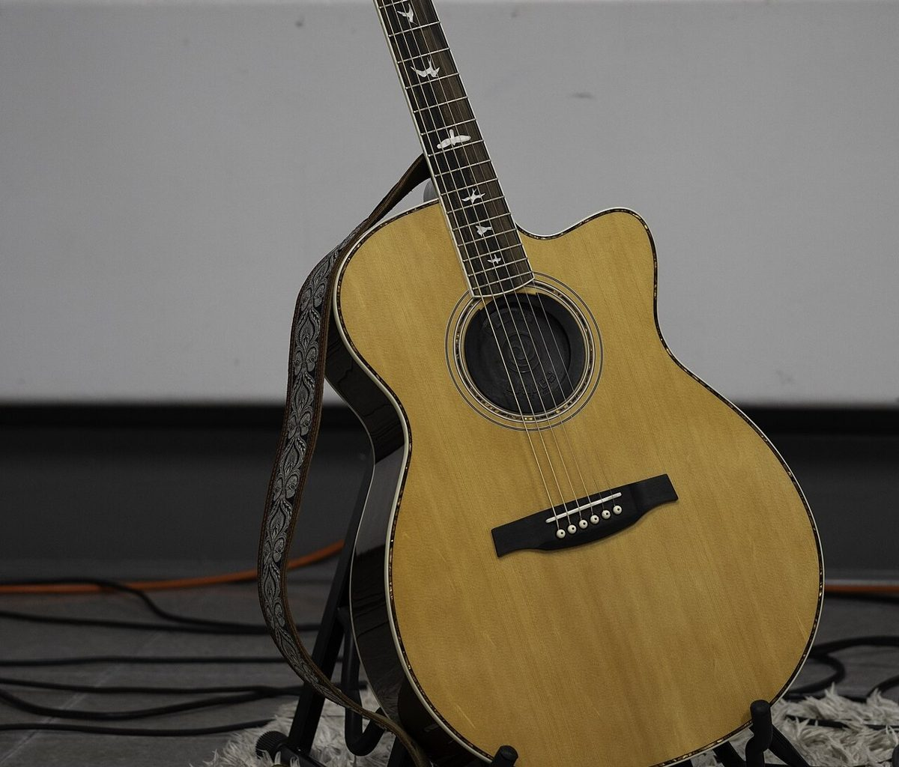
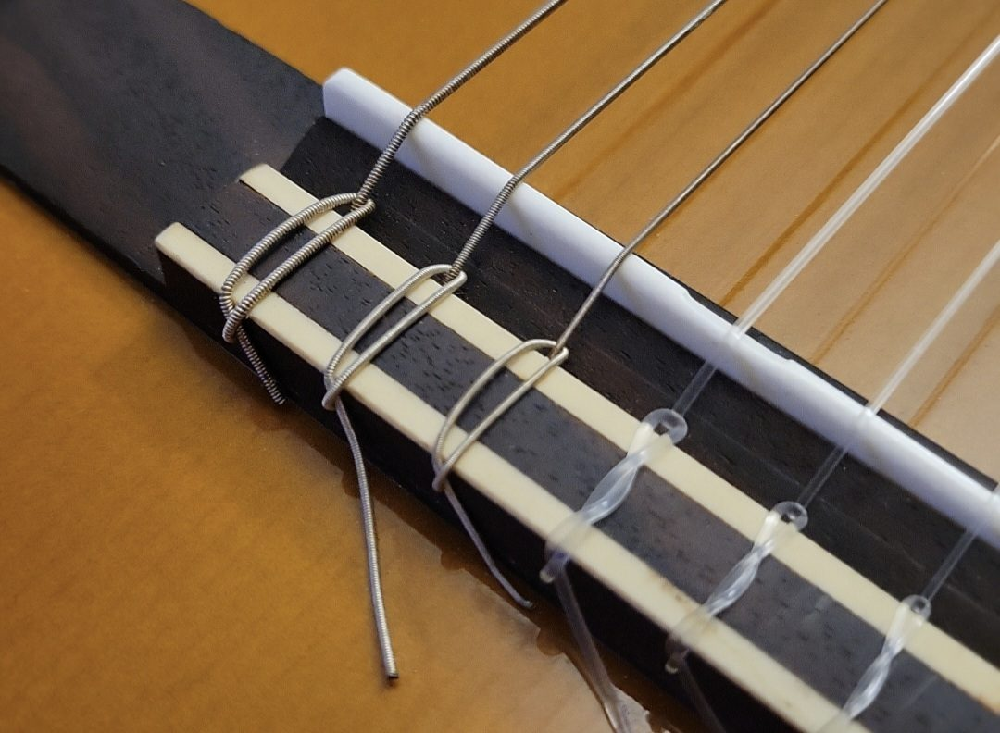
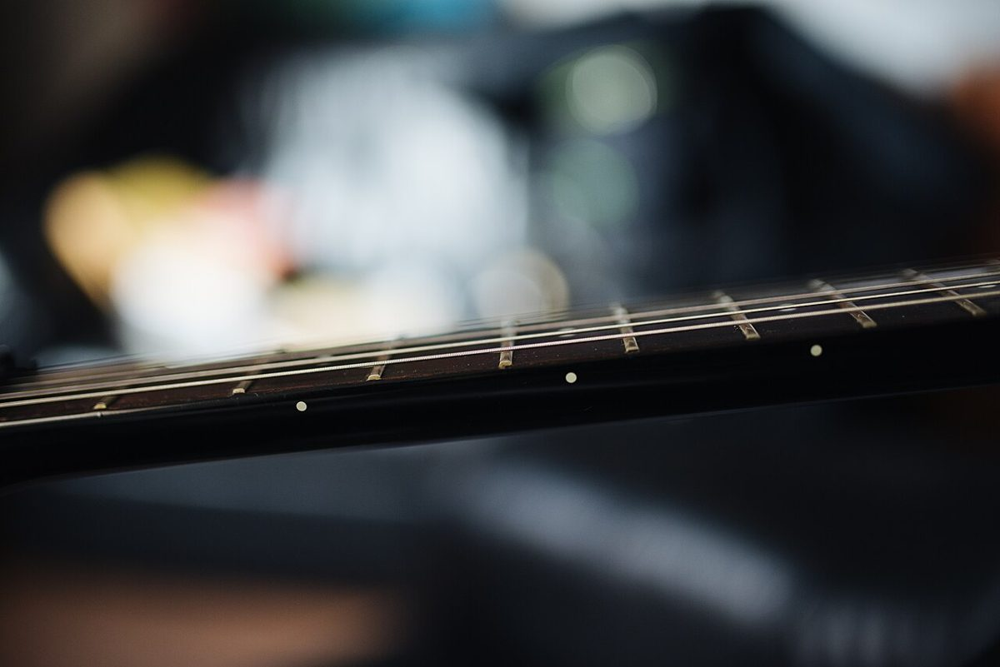

ACOUSTIC

ABOUT THIS PAGE
コンセントを、抜いておく。
制作側の連想で、お店の理念・由来とは無関係です。「ACOUSTIC」という言葉から、アンプにつながず生音で演奏する「アンプラグド」のライブを連想し、各ページを手書きのセットリストの「1曲」に見立てました。お店の実際の様子や考え方とは関係ありません。
TONIGHT'S SET (IMAGE)
パンと、コーヒーと、弦。
以下の写真は、店名の3語(ACOUSTIC / Bread / Coffee)から連想して選んだフリー素材です。お店の商品や店内ではありません。
1
Bread


2
Coffee


E
Encore: Strings


INFO
お店のこと(確認できたものだけ)
| 所在地 | 〒299-4504 千葉県いすみ市岬町桑田1506-3 |
|---|---|
| 電話 | なし |
| 営業時間 | 準備中 |
| 定休日 | 準備中 |
| ご予約 | 準備中 |
| 駐車場 | 準備中 |
| SNS | Instagram @acoustic_asana |